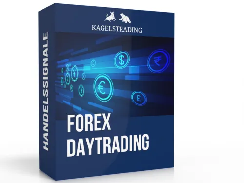

Optionsscheine & Zertifikate Signale
Produktprofil · Marktplatz-Daten 2026-10-10 · Verkaufsseiten-Recherche 2026-10-09 · Kategorien: Trading Products
- Optionsscheine & Zertifikate Signale ist ein/e Elektronische Dienstleistung in Trading Products, vertrieben über den Digistore24-Marktplatz von Anbieter kagels-trading, gelistet seit 2019-03-21.
- Listenpreis $207.95; Digistore24 meldet 6 % Checkout-Konversion, 8.42 % Stornierungsquote und 15 % Affiliate-Provision.
- Verdienst pro Verkauf (Affiliate): $64.18 (Anbieter-seitige Statistik, keine Prognose).
Interesse an Optionsscheine & Zertifikate Signale? Aktueller Preis, Boni und Garantiebedingungen finden Sie auf der offiziellen Seite des Anbieters:
Offizielle Verkaufsseite ansehen
Affiliate-Link (Werbung) — wir verdienen ggf. eine Provision, ohne Mehrkosten für Sie.

Marktplatz-Daten
| Produkttyp | Elektronische Dienstleistung |
|---|---|
| Preis | $207.95 (Subscription) |
| Affiliate-Provision | 15 % |
| Garantie/Rückgabe | Laut Verkaufsseite des Anbieters — vor dem Kauf auf der offiziellen Seite prüfen |
| Anbieter | kagels-trading (gelistet seit 2019-03-21) |
| Marktplatz-Statistiken* | Checkout-Konversion 6 % · Stornoquote 8.42 % · Verdienst/Verkauf $64.18 |
* Anbieter-seitige Statistiken von Digistore24; sie hängen von der Traffic-Qualität ab und sind keine Prognose.
Marktplatz-Beschreibung des Anbieters
Sie suchen nach einem Trading-Partnerprogramm, das seriös ist und regelmäßig wiederkehrende Umsätze bringt? Dann haben Sie mit unseren Optionsscheinen & Zertifikate Signale genau das richtige gefunden. Unsere professionellen Trading-Signale richten sich an Einsteiger und fortgeschrittene Trader von Optionsscheinen und Zertifikaten. Die Signale werden ausgesucht von dem Trading Team der Kagels Trad…
Von der Verkaufsseite des Anbieters
Seitentitel: Profitable Optionsscheine/Zertifikate Trading-Signale (2026)
Meta-Beschreibung: Handelssignale für Optionsscheine, Hebelprodukte und Knock Out Zertifikate Trader ✅ Profitabel, ehrlich, transparent ✅ Jetzt 14 Tage testen.
Hauptüberschrift
Verdiene Geld mit professionellen Swingtrading Signalen für Optionsscheine & Knock-Out Zertifikate von Heiko Zeh
Abschnitts-Überschriften
- Swingtrading-Performance mit Optionsscheinen & Zertifikaten von Heiko Zeh.
- Ø 39 %
- 2–5
- 50–60 %
- Das macht die Swingtrading Signale für Optionsscheine und Zertifikate von Heiko Zeh so besonders.
- Das kannst Du von unseren Swingtrading Signalen für Optionsscheine und Zertifikate erwarten.
- Triff den Experten
- So einfach erhältst Du Deine Trading-Signale.
- Watchlist & laufende Updates
- Von unseren Kunden bestätigter Trading-Erfolg.
Einstiegstext
PERFORMANCE Swingtrading-Performance mit Optionsscheinen & Zertifikaten von Heiko Zeh. Erfahre jetzt, welche Ergebnisse Du von den aktiv gemanagten Signalen für Optionsscheine und Zertifikate von Heiko Zeh erwarten kannst:
EIGENSCHAFTEN Das macht die Swingtrading Signale für Optionsscheine und Zertifikate von Heiko Zeh so besonders. So nutzt Heiko über 30 Jahre Markterfahrung, um Hebelprodukte strukturiert, diszipliniert und mit klarer Risikobegrenzung einzusetzen – und Du profitierst direkt davon.
01 Gezielte Auswahl Setups werden auf Basis von fundamentaler und technischer Analyse vorbereitet und erst aktiviert, wenn klar definierte Kurszonen erreicht werden. Das ermöglicht Dir ein hohes Chancen-Risiko-Verhältnis .
02 Einstieg erst bei Bestätigung Heiko arbeitet ausschließlich mit Limit-Orders auf steigende und fallende Kurse. Dieses Vorgehen ermöglicht ein emotionsloses und strukturiertes Trading . Außerdem kannst Du die Signale in Ruhe aufsetzen und sie automatisch aktivieren lassen.
Fragen, die die Verkaufsseite beantwortet
- War Deine Frage nicht dabei?
Recherche-Methode: rohes HTML · 2317 Wörter · Qualität: rich · recherchiert am 2026-10-09. Vollständige Recherche-Datei (MD) ↗
Wie Produkte dieser Art geliefert werden
Allgemeiner Hinweis zu diesem Produkttyp (keine anbieterspezifische Anleitung): Remote-Dienstleistungen werden elektronisch erbracht — der Anbieter meldet sich nach dem Kauf. Für die genaue Anwendung von Optionsscheine & Zertifikate Signale sind die offizielle Verkaufsseite und die enthaltenen Materialien maßgeblich.
Weitere Bilder (von der Verkaufsseite des Anbieters)
Bilder stammen von der offiziellen Verkaufsseite des Anbieters und zeigen das Produkt, wie es beworben wird.
Gut zu wissen
- Hoher Preis: $207.95 ist eine erhebliche Ausgabe — prüfen Sie, ob es einen Zahlungsplan gibt, und vergleichen Sie zuerst die günstigeren Alternativen der Kategorie.
- Keine Garantie-Formulierung in unserer Recherche gefunden — bestätigen Sie das Rückgabefenster auf der offiziellen Seite, bevor Sie kaufen.
- Hinweise der Verkaufsseite (wörtlich, nicht von uns geprüft): „Wochenzusammenfassung: Einordnung der Handelswoche und Status der Positionen.Die wichtigsten Termine der Woche und mögliche Auswirkungen."
- Hinweise der Verkaufsseite (wörtlich, nicht von uns geprüft): „Dann schreibe mir gerne eine E-Mail. Ich beantworte persönlich Deine Fragen. Mir ist wichtig, dass Du klare Entscheidungen treffen kannst, die Dich weiterbringen."
- Marktplatz-Zahlen (Preis, Provision, Konversion, Stornoquote) — Quelle: offizielle Digistore24-Marktplatz-API (Affiliate-Sicht), Stand 2026-10-10. Gegenprüfung: Marktplatz-Suche nach Produkt-ID 264879.
- Verkaufsseiten-Zitate — Quelle: https://www.kagels-trading.de/trading-signale/knock-out-handelssignale/, abgerufen 2026-10-09 (Methode: rohes HTML). Verify: offizielle Seite öffnen.
- Garantie / Rückgabe — vom Anbieter festgelegt; vor dem Kauf auf der Verkaufsseite bestätigen.
- Nicht von uns geprüft: Produktqualität, Ergebnisse, Testimonials — kein Praxistest für dieses Listing durchgeführt.
Häufige Fragen zu Optionsscheine & Zertifikate Signale
Antworten aus dem Marktplatz-Snapshot (2026-10-10) und der Verkaufsseiten-Recherche (2026-10-09); Anbieteraussagen sind inline gekennzeichnet.
Was ist Optionsscheine & Zertifikate Signale?
Optionsscheine & Zertifikate Signale ist ein Angebot des Typs „Elektronische Dienstleistung" im Digistore24-Marktplatz, Anbieter: kagels-trading, gelistet seit 2019-03-21. Eingepflegt unter Handelsprodukte. Digistore24 wickelt Checkout, Lieferung und Rückgaben ab.
Wie viel kostet Optionsscheine & Zertifikate Signale?
Der Digistore24-Marktplatz listet es für $207.95 (subscription). Preise legt der Anbieter fest und können sich ändern — der Marktplatz-Eintrag oben zeigt den Schnappschuss; die offizielle Verkaufsseite zeigt den aktuellen Preis.
Gibt es eine Geld-zurück-Garantie für Optionsscheine & Zertifikate Signale?
Unsere Verkaufsseiten-Recherche hat keine explizite Garantie-Formulierung gefunden. Viele Digistore24-Produkte bieten 60 Tage Geld-zurück, aber das legt jeder Anbieter selbst fest — bestätigen Sie es auf der offiziellen Verkaufsseite, bevor Sie kaufen.
Ist Optionsscheine & Zertifikate Signale seriös?
Wir bewerten keine Seriosität — wir veröffentlichen überprüfbare Zahlen: Anbieter kagels-trading (gelistet seit 2019-03-21), Checkout-Konversion 6 %, Stornoquote 8.42 %, Affiliate-Verdienst/Verkauf $64.18 (alles Anbieter-seitige Marktplatz-Statistiken). Lesen Sie unsere 6-Punkte-Bewertungsmethode und entscheiden Sie anhand der Zahlen — oder diskutieren Sie Optionsscheine & Zertifikate Signale auf GitHub.
Wo kann ich Optionsscheine & Zertifikate Signale sicher kaufen?
Nur über die offizielle Verkaufsseite, die auf dieser Seite verlinkt ist (Checkout und Rückgaben laufen über Digistore24). Prüfen Sie dort Preis und Garantie vor der Bestellung. Der Link ist ein Affiliate-Link — der Kauf unterstützt diese Website ohne Mehrkosten für Sie.
Wie erhalte ich Optionsscheine & Zertifikate Signale nach der Zahlung?
Der Checkout läuft über Digistore24: Nach der Zahlung erhalten Sie Zugangsdaten und Ihr Abo-Dashboard. Lieferdetails für diesen Produkttyp: Remote-Dienstleistungen werden elektronisch erbracht — der Anbieter meldet sich nach dem Kauf. Bei Problemen kann der Digistore24-Käufersupport Ihre Bestellung wiederherstellen.
Ähnliche Angebote in Handelsprodukte

Unsere Plattform Affiliateking.net – nutze sie, um zusätzlich zu den Provisionen saftige Zusatzeinnahmen zu kassieren. Hier direkt zur Partnerseite + Werbemitte
Bundle aus mehreren Produkten zum Thema sichere Optionsstrategien. Als Affiliate bewirbst Du ein zentrales Thema – der Kunde durchläuft einen mehrstufigen Conve

TOP-Dauereinkommen! DIE Ausbildung zur Neuen Geldordnung (NGO) und zum Krypto-Handel für den Master-Gewinn am Krypto-Markt. Deine Vorteile als Affiliate: hochwe

Vermittle die aktuell schnellste & sicherste (Day)Trader Ausbildung, die im deutschsprachigen Raum angeboten wird. Extrem hohe Nachfrage! Darum wählen unser
Weitere Angebote von kagels-trading

Möchtest du mit dem Triple Momentum Indikator wiederkehrende Einnahmen erzielen? Mit unserem Partnerprogramm ist das ganz einfach! Du verdienst nicht nur einmal

Sie suchen nach einem Trading-Partnerprogramm, das seriös ist und regelmäßig wiederkehrende Umsätze bringt? Dann haben Sie mit unseren Aktien-Index Daytrading S

Sie suchen nach einem Trading-Partnerprogramm, das seriös ist und regelmäßig wiederkehrende Umsätze bringt? Dann haben Sie mit unseren DAX-Index Trading Signale

Sie suchen nach einem Trading-Partnerprogramm, das seriös ist und regelmäßig wiederkehrende Umsätze bringt? Dann haben Sie mit unseren Forex Trading-Signalen (M
Ähnliche Preislage in Handelsprodukte
Sie suchen nach einem Trading-Partnerprogramm, das seriös ist und regelmäßig wiederkehrende Umsätze bringt? Dann haben Sie mit unseren Aktien-Index Daytrading S
Sie suchen nach einem Trading-Partnerprogramm, das seriös ist und regelmäßig wiederkehrende Umsätze bringt? Dann haben Sie mit unseren DAX-Index Trading Signale
Der Onlinekurs „Kapitalarchitektur 50/30/20“ zeigt Privatanlegern ein strukturiertes System zum Aufbau eines stabilen Investment-Depots. Statt kurzfristiger Spe

Sie suchen nach einem Trading-Partnerprogramm, das seriös ist und regelmäßig wiederkehrende Umsätze bringt? Dann haben Sie mit unseren Forex Daytrading-Signalen
Ähnliche Suchanfragen
Wo Sie es sich ansehen können
Wo Sie es sich ansehen können
Aktuelle Preise, Garantie und Boni finden Sie auf der offiziellen Verkaufsseite:
Offizielle Verkaufsseite ansehen
Das ist ein Affiliate-Link (Werbung) — kaufen Sie darüber, verdienen wir ggf. eine Provision, ohne Mehrkosten für Sie.
Quellen & weiterführende Informationen
- Offizielle Verkaufsseite (aktueller Preis, Garantie, Boni): www.kagels-trading.de/trading-signale/knock-out-handelssigna (Affiliate-Link)
- Öffentliche Digistore24-Produktseite: digistore24.com/product/264879
- Vollständige Recherche-Datei (Markdown, versioniert): content/products/33787-optionsscheine-zertifikate-signale.md
- Affiliate-Supportseite des Anbieters: www.kagels-trading.de/affiliate-registrierung/
- Marktplatz-Kategorie: Handelsprodukte
Wie wir Produkte wie Optionsscheine & Zertifikate Signale bewerten
Sechs Prüfungen, ausschließlich mit offiziellen Marktplatz-Zahlen. Die vollständige Bewertungsmethode lesen · unsere Recherche-Standards & Kennzeichnung.
Fragen oder eigene Erfahrungen mit Optionsscheine & Zertifikate Signale?
Praxis-Tests veröffentlichen wir erst, nachdem wir ein Produkt selbst gekauft haben — aber Ihre Erfahrung hilft anderen Lesern: Diskussion zu Optionsscheine & Zertifikate Signale auf GitHub starten/verfolgen. Falsche Zahl gefunden? Korrektur melden — jede Seite zeigt ihre Datenstände, Korrekturen gelten für die ganze Website.